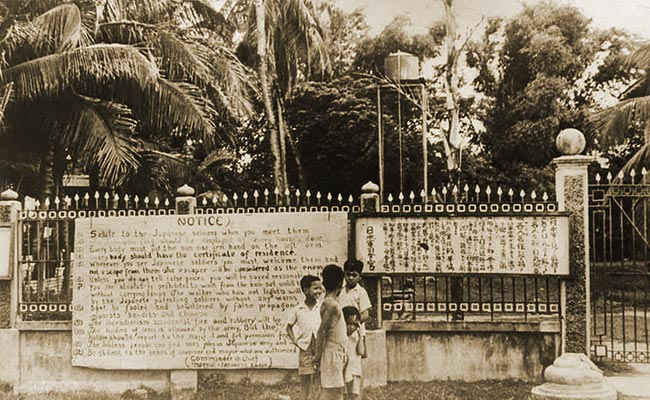

|
January 13, 1944
"Japanese damage three foe destroyers south of Shortland." In a fierce battle between Japanese naval land units in Poporang Island and our cruisers and destroyers, we suffered damages worth mentioning, but the Japanese never suffer from anything more than "slight" damage.
"America forced to ask aid of Britain in Pacific War" — just because the Japanese thought they saw a couple of Spitfires over Rabaul.
La Vanguardia: "Another attack at Maungdaw fails" — in Burma. We know the British took it a few days ago.
Rumor has it that the Japanese Military Police have taken over Santo Tomas completely.

Santo Tomas Entrance Sign
( 1) Salute to the Japanese soldiers when you meet them.
( 2) The Japanese flag should be displayed at every house's door.
( 3) Every body must put the sunrise armband on the left arm.
( 4) Every body should have the certificate of residence.
( 5) Wherever you see Japanese soldiers you must welcome them and not escape from them. The escaper wil be considered as the enemy.
( 6) Unless you do not tell false prices you will be payed reasonably by the...
( 7) You are absolutely prohibited to walk from the sun-set untill the ... without carrying lamps. The walker who has not lights will ... by the Japanese patrolling soldiers without any warns.
( 8) Dont be fooled and bewildered by false propaganda [from] communists bandits and Chinese.
( 9) The incendiariism accidental fire and robbery will be....
(10) The holding of arms is allouued by the army. But the holder should report to the mayor it and get permission from....
(11) The jobless people can find one's jobs in Japanese army and w....
(12) Be obdient to the orders of Governor and mayor who are authorized....
(Commander in Chief, Imperial-Japanese Force)
|